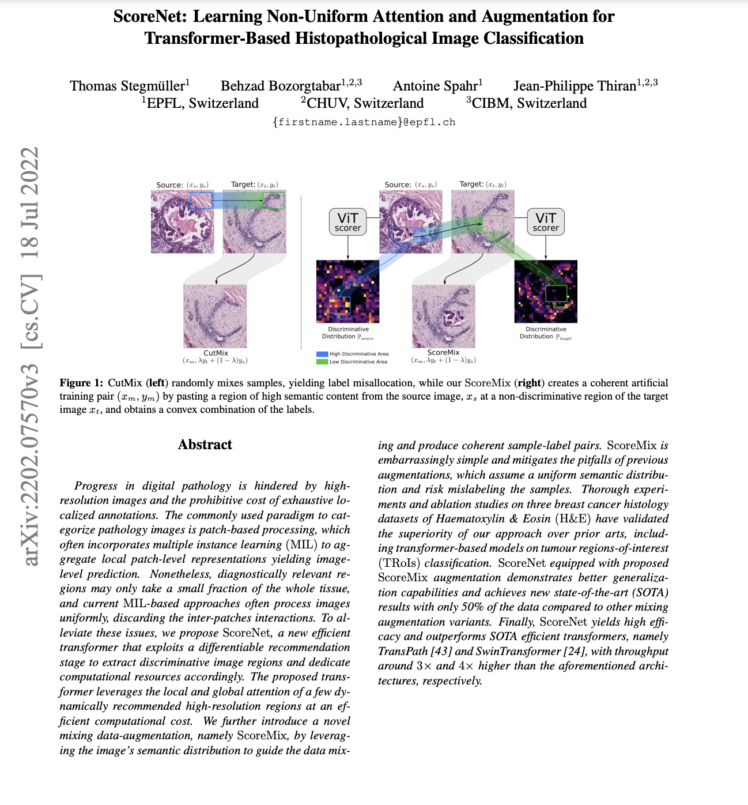

|
|
Below, we illustrate an overview of the proposed training pipeline for H&E stained histology TRoIs' representation learning.
Histopathological image classification requires capturing cellular and tissue-level microenvironments and learning their respective interactions. Motivated by the above, we propose an efficient transformer, ScoreNet that captures the cell-level structure and tissue-level context at the most appropriate resolutions. Provided sufficient contextual information, we postulate and empirically verify that a tissue's identification can be achieved by only attending to its sub-region in a high-resolution image. As a consequence, ScoreNet encompasses two stages. The former (differentiable recommendation) provides contextual information and selects the most informative high-resolution regions. The latter (aggregation and prediction) processes the recommended regions and the global information to identify the tissue and model their interactions simultaneously.
More precisely, the recommendation stage is implemented by a ViT and takes as input a downscaled image to produce a semantic distribution over the high-resolution patches. Then, the most discriminative high-resolution patches for the end task are differentiably extracted. These selected patches (tokens) are then fed to a second ViT implementing the local fine-grained attention module, which identifies the tissues represented in each patch. Subsequently, the embedded patches attend to one another via a transformer encoder (global coarse grained attention). This step concurrently refines the tissues' representations and model their interactions. As a final step, the concatenation of the [CLS] tokens from the recommendation's stage and that of the global coarse grained attention's encoder produces the image's representation. Not only does ScoreNet's workflow allows for a significantly increased throughput compared to SOTA methods, it further enables the independent pre-training and validation of its constituent parts.
ScoreNet Results
Below, we compare the TRoIs classification performance of ScoreNet on the BRACS dataset against the state-of-the-arts, including MIL-based e.g., TransMIL and CLAM, GNN-based, e.g., HACT-Net, and self-supervised transformer-based approaches, e.g., TransPath. ScoreNet reaches a new state-of-the-art weighted F1-score of 64.4% on the BRACS TRoIs classification task outperforming the second-best method, HACT-Net, by a margin of 2.9%.
ScoreNet allows for an easily tuning to meet prior inductive biases on the ideal scale for a given task.
Try our code
We released PyTorch code and models of the ScoreNet for your use.
Paper
|  |
T. Stegmüller, B. Bozorgtabar, A. Spahr, J.P. Thiran
ScoreNet: Learning Non-Uniform Attention and Augmentation for Transformer-Based Histopathological Image Classification.
In WACV, 2023.
arXiv
|
BibTeX
@inproceedings{Stegmüller2023scorenet,
title={ScoreNet: Learning Non-Uniform Attention and Augmentation for Transformer-Based Histopathological Image Classification},
author={Stegmüller, Thomas and Bozorgtabar, Behzad and Spahr, Antoine and Thiran, Jean-Philippe},
booktitle={Proceedings of the IEEE/CVF Winter Conference on Applications of Computer Vision (WACV)},
year={2023}
}
Acknowledgements
We thank Taesung Park for his project page template.
|